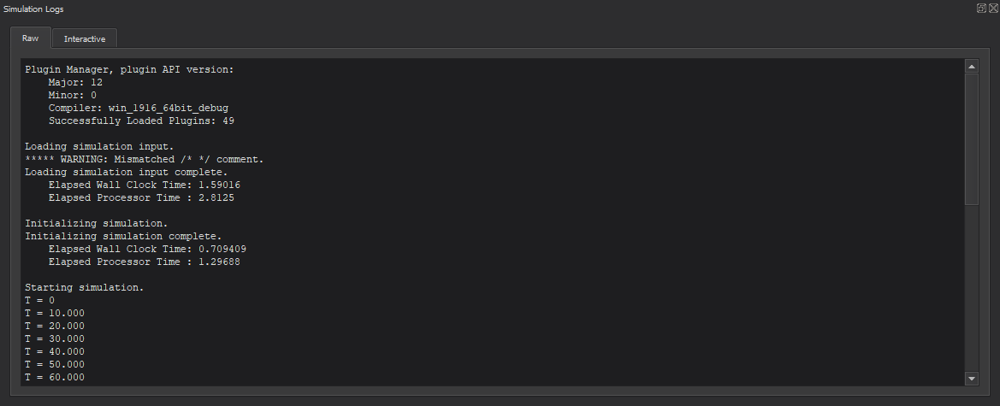
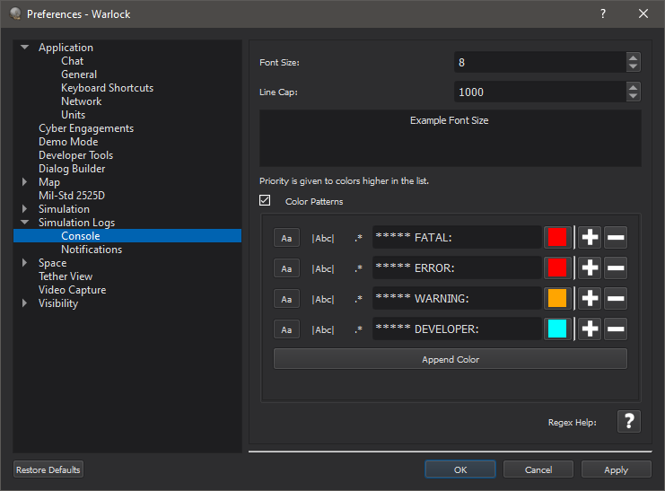
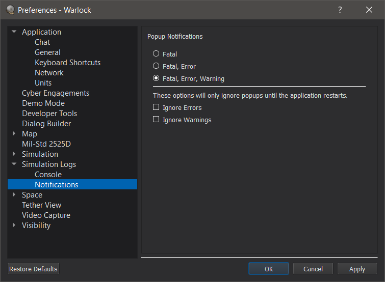

Simulation Logs - Warlock¶
The Simulation Logs dialog allows the user to view, sort, and filter the outputs from the simulation.
Console Output¶
From the Console Output tab, unfiltered text output is displayed chronologically.
Within this tab, the user may export raw simulation logs using the context menu (Right-Click) option, “Export Simulation Logs”.
Console Preferences¶
The console font size, line cap, and coloring can be customized from preferences.
Decreasing the line cap may provide performance improvements, but will limit the amount of history visible in the console output. The line cap does not affect the interactive output window or the “Export Simulation Log” context menu option.
Each color has 3 toggleable settings, a text pattern, and a color. If the pattern matches a piece of text in the console, that text will be assigned the specified color; the rest of the line will remain unchanged. Colors higher in the list take higher priority.
The toggleable settings are:
(
Aa) Case Sensitive: If enabled, the text pattern is case sensitive.(
|Abc|) Match Whole Word: If enabled, ignores matches in the middle of words.(
.*) Use Regex: If enabled, the text is interpreted as a Perl style regular expression instead of plain text.
A regex quick reference guide can be viewed by clicking the “Regex Help” button.
Note
When using regex patterns, multi-line patterns may not be colored as expected.
Interactive¶
From the Interactive tab, the user may view, sort, and filter the simulation output.

This tab includes the following features:
Options Button: Toggles visibility of the “Include” and “Sort by” options.
Error Counter: A cumulative count of simulation errors, including fatal messages.
Warning Counter: A cumulative count of simulation warnings.
+/- Buttons: These buttons expand and collapse, respectively, all entry contents in the Results Display. The active option determines the visibility behavior for all future logs.
Search Bar (Find…): Allows the user to search for logs containing a given word or phrase. This search is not case sensitive.
Include Options: Allows type-based message filtration.
- Sort by Options: Allows message sorting by the first line (parent line) of each log entry.
Chronological: Time based ordering
Type: Type-based sorting (Fatal, Error, Warning, Infor, Debug, Developer). Entries of the same type are sub-sorted chronologically.
Alphabetical: Standard alphanumeric sorting of each log entry. Entries with the same parent line are sub-sorted chronologically.
Reverse: This checkbox will reverse the order of all log entries for each mode above.
Note
Sorting only affects the order of log entries respective to one another. It does not affect child lines within a given log entry.
- Results Display: A tree view to display filtered and sorted simulation logs
Entries of type Fatal, Error, Warning, Debug, and Developer appear with an indicative icon next to each entry.
Notification Preferences¶
Popup notification settings can be adjusted from Preferences. This page can also be opened directly from popup notification dialogs.
When enabled, a popup will appear for qualifying message types. Popups require user acknowledgement and are centered onscreen.
Note
Multiple popups will not occur simultaneously. Qualifying messages that occur while a popup is open do not create another popup.
Checking the checkbox will prevent future popups of that severity (error, warning) from appearing until the next time the application is opened. This can be set or unset from within preferences.
The “Preferences…” button will open the notification preferences page.